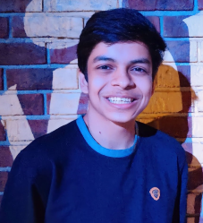

I'm an 11th grader currently studying at DAV Public School, Pune. I like spending my hours coding and playing video-games. I love exploring and experimenting with new technologies and learning new things!
I'm currently working on building this website with HTML, CSS and Javascript :D
The Voice of Wisom was a non-profit organisation that I co-founded. We would write and publish monthly online newspapers. My role was creating the website as well as being in charge of all the graphic design. The project continued for 2 years, after which, we had to pause it indefinitely due to lack of time because of in-person school.
I was part of a team of 1000 students from all over India in a joint project by the APJ Abdul Kalam International Foundation,
Martin Group and Space Zone India. I, and my team of 9 others worked on making a real-time clock that would be launched as oneof the 100 Femto Satellites (Satellites weighing less than 100 grams).
This is recognised by:
• India Book of Records
• The Asia Book of Records
• World Book of Records, London
• Assist World Records Research Foundation
• Guinness World Records
Ploggr was a startup that I co-founded. We organised "plogging" marathons. Plogging means picking up trash while jogging. My role was building the website and creating all the graphic designs. Ploggr was discontinued in 2020 due to COVID.